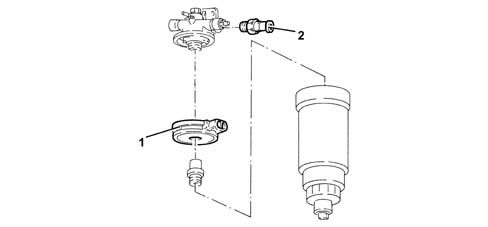
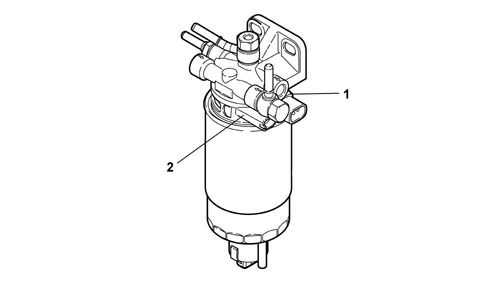

1044D fuel heating device
- Path
- Descriptions > 10 ENGINE > 1044 FUEL CIRCUIT PUMP/AND DEVICES > 1044D fuel heating device
- Kind
- system description
- Applies to
- engines: 1.9 JTD 8V, 1.9 JTD 16V; all production periods
- Interactive page
- https://sloeber94.github.io/elrnDB-a147/en/#/3022442
Applies to: engines: 1.9 JTD 8V; all production periods
COMPONENT DESCRIPTIONS
FUEL HEATING DEVICE
The fuel filter is equipped with a fuel pre-heating device (1) controlled by the injection control unit on the basis of a signal from a thermal switch (2) fitted to the fuel filter mount.

Applies to: engines: 1.9 JTD 16V; all production periods
COMPONENT DESCRIPTION
FUEL HEATING DEVICE
The fuel filter is equipped with a fuel pre-heating device (1) controlled by the injection control unit on the basis of a signal from a thermal switch (2) fitted to the fuel filter mount.
